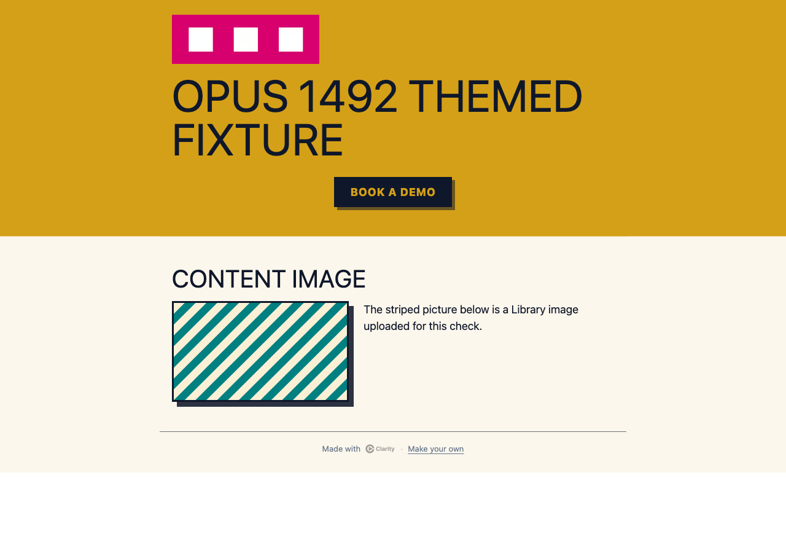
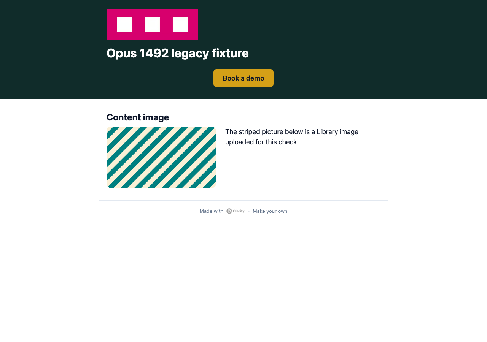

PR 1492. Mock content only. Verified by Opus 5.5 on commit ebcd6b6a8e5bceba0d38061a985a546e9e0e561f. Free → Pro → Free kept the full design and saved revisions unchanged. The badge appeared only on Free. Full verification report.


Before the final correction, a dark legacy brand made the badge text white on white. The corrected result is shown above.